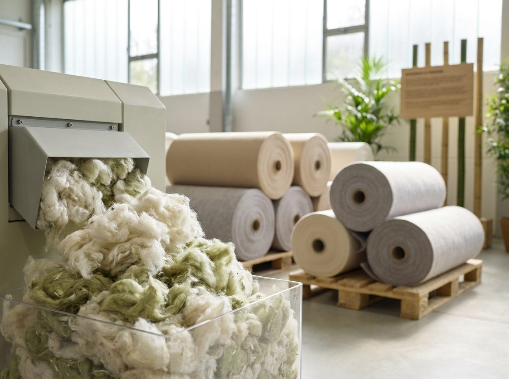

Technical textiles made in the EU, with recycled fibres, controlled processes and materials engineered to last.
Needle-punched nonwovens are inherently suited to recycled fibre. A significant share of our production programs uses recycled and regenerated fibres — turning textile by-products into filter media, substrates and technical felts with a documented second life.
Under ISO 14001 we manage energy, water and waste across the plant, and our materials are engineered for long service life — the most direct way a technical textile reduces its footprint.

Recycled and regenerated fibres in needle-punched products wherever the application allows.
Certified environmental-management system for energy, water and waste.
Materials engineered to your conditions last longer in service — fewer replacements, less waste.
Production in Slovenia and Serbia keeps supply chains short for European customers.
Recycled-content statements, ISO 14001 scope and REACH declarations — on request, within one business day.